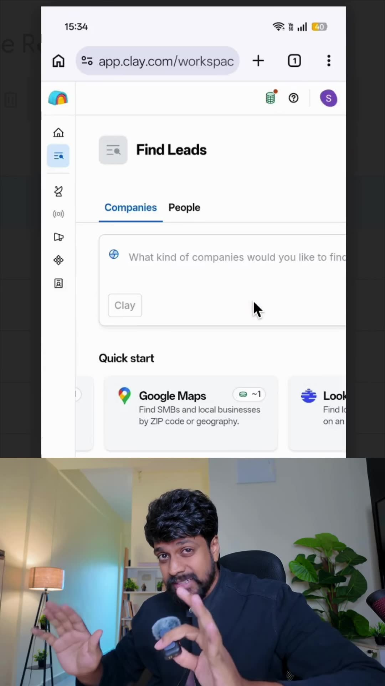
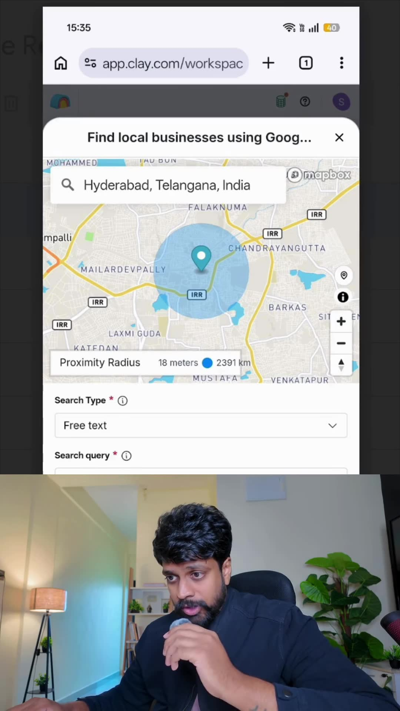
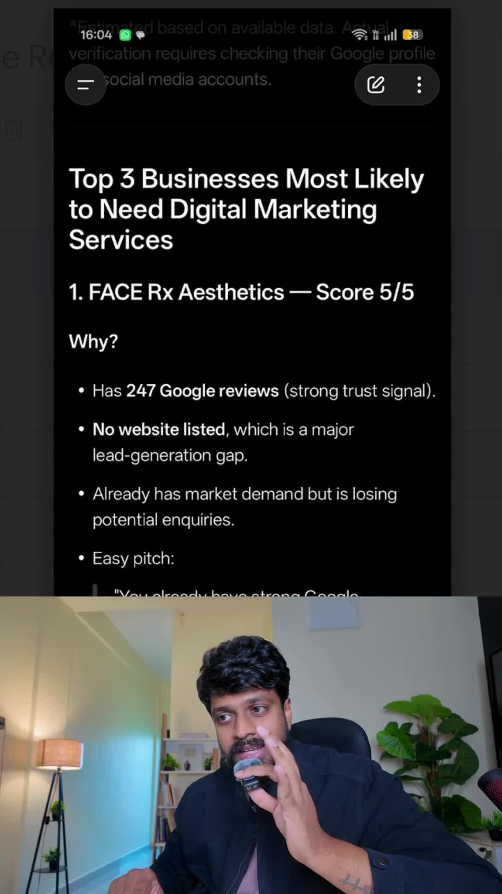
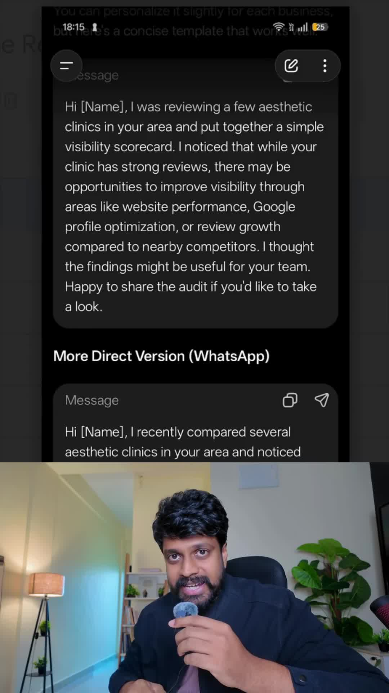

Executive Summary
Freelance agencies and B2B marketers often waste dozens of manual hours copying contact information from Google Maps, only to send generic cold pitches to low-intent local businesses. By combining Clay.com's Google Maps native integration with LLM qualification scoring, consultants can automate lead extraction, rank businesses by probability of needing digital marketing services, and generate hyper-tailored visibility scorecards.
In this implementation guide, growth marketer Veeru breaks down the end-to-end Clay workflow: extracting local aesthetic clinics, executing multi-factor scoring (reviews, website presence, social activity), and running the 5-per-day outreach math that yields predictable monthly client closes.
Core Visual Demonstrations




The 4-Step Clay Outreach Funnel
Step 1: Local Geo-Scraping via Clay
In Clay, create a new table and select Import from Google Maps:
- Location: Specific metropolitan target (e.g., Hyderabad, Telangana or Austin, TX).
- Search Query: High-ticket local service categories where single-customer lifetime value is high (
Aesthetic Clinics,Dental Implants,Luxury Interior Designers,Commercial Roofing). - Clay exports: Business Name, Street Address, Phone Number, Website URL, Rating, and Total Review Count.
Step 2: AI Qualification Scoring Prompt
Pass the raw Google Maps dataset through Claude 3.5 Sonnet or ChatGPT inside Clay with this qualification rubric:
Evaluate each business on a scale of 1 to 10 for "Need for Digital Marketing Services":
- High Priority Criteria (Score 8-10):
1. High review volume (> 50 reviews, average > 4.2 stars) proving strong operational cash flow.
2. Missing, broken, or outdated non-responsive website URL.
3. No active Meta Pixel or Google Analytics detected on domain.
4. Inactive social media links (last post > 90 days ago).
Filter and output only the Top 3 highest-probability businesses with a 2-sentence rationale for each.Step 3: The "Visibility Scorecard" Outreach Script
Instead of pitching services, lead with diagnostic insights:
"Hi [Founder Name],
I was researching leading aesthetic clinics across [City] and put together a simple 3-point digital visibility scorecard for [Clinic Name].
While your Google reviews are phenomenal (4.8 stars across 120 patients), I noticed two subtle leaks where prospective patients looking for [Treatment] are currently getting routed to [Competitor Name]:
1. [Specific Website Friction / Missing Online Booking]
2. [Unclaimed Local Map Keyword]
I recorded a quick 90-second screen walk-through showing how to plug these two leaks. Would you be open to me sending the private link over?"
Step 4: The 5-per-Day Outreach Economics
| Outreach Cadence | Monthly Volume | Conservative Reply Rate | Closing Rate | New Retainer Clients |
|---|---|---|---|---|
| 5 Highly Tailored Outreaches / Day | 150 prospects / month | 10% reply (15 calls) | 20% close on calls (2% overall) | 3 New Clients / Month ($3,000–$6,000/mo ARR added) |